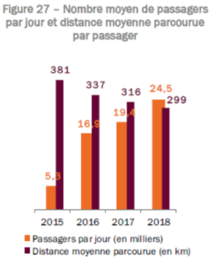

Comme on peut le voir sur ce graphique, nous pouvons étudier les besoins des passagers des bus et autocars.
En 2015, les distances parcourues par les bus et autocars est en moyenne de 381Km pour 5,3 mille passagers.
De 2016 à 2018 les distances moyennes parcourues par les bus et autocars a diminué d’environ 21 %, et nous présente une tendance en hausse de passagers de 78 %.
Nous pouvons supposer que les demandes de transports en bus et autocars pourraient être dans des distances courtes ou moyennes distances.
